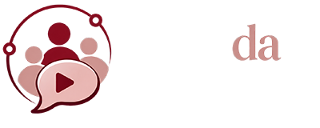
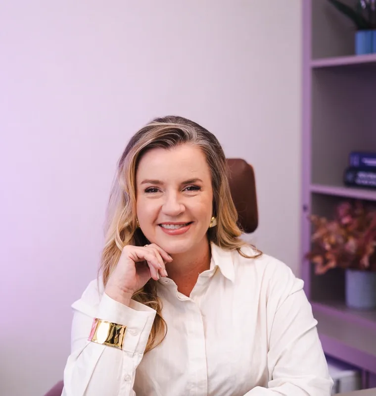
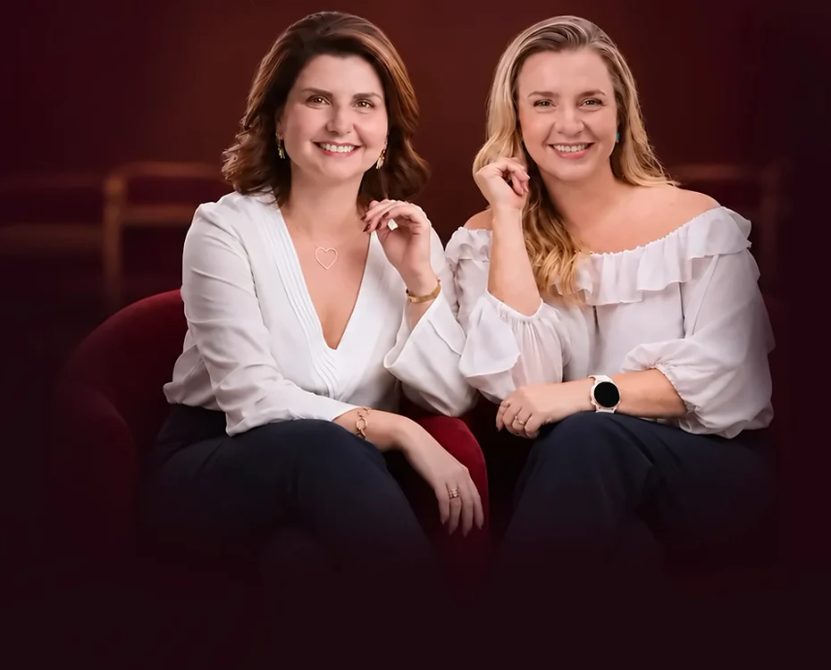
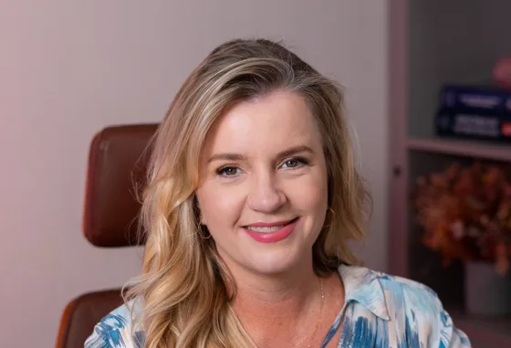
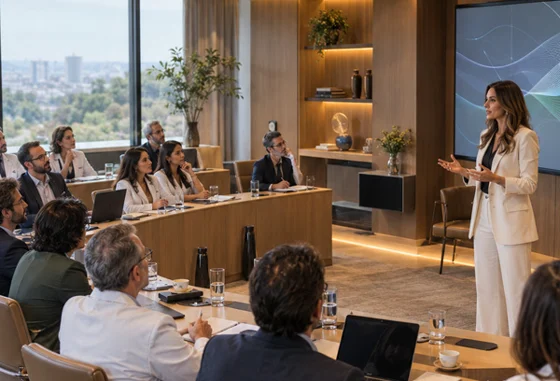
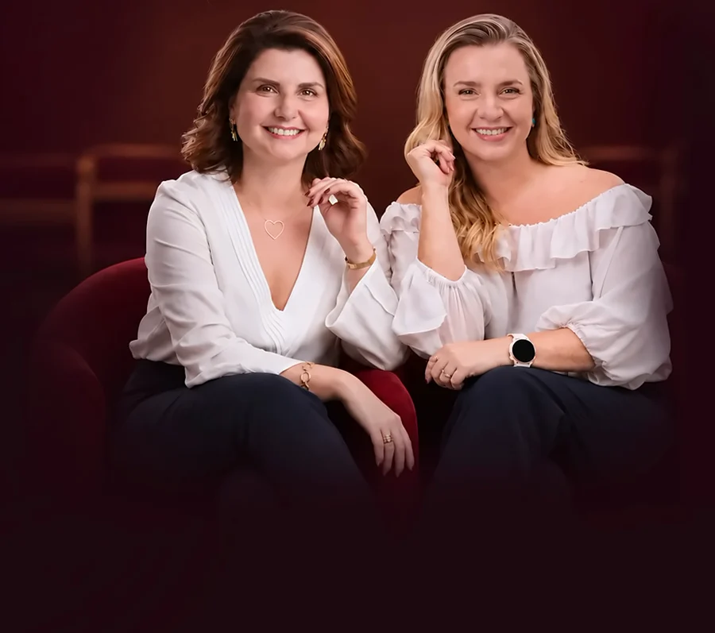
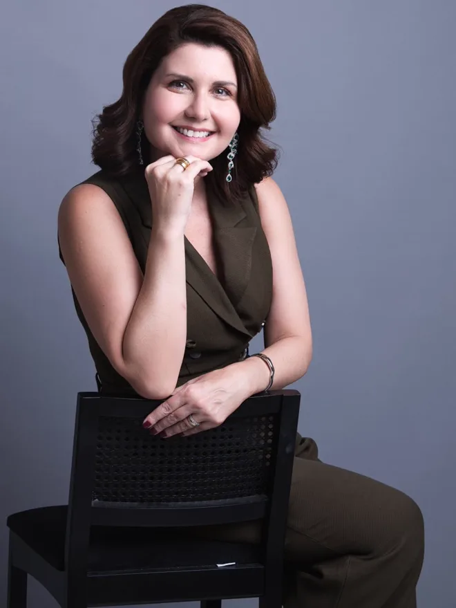
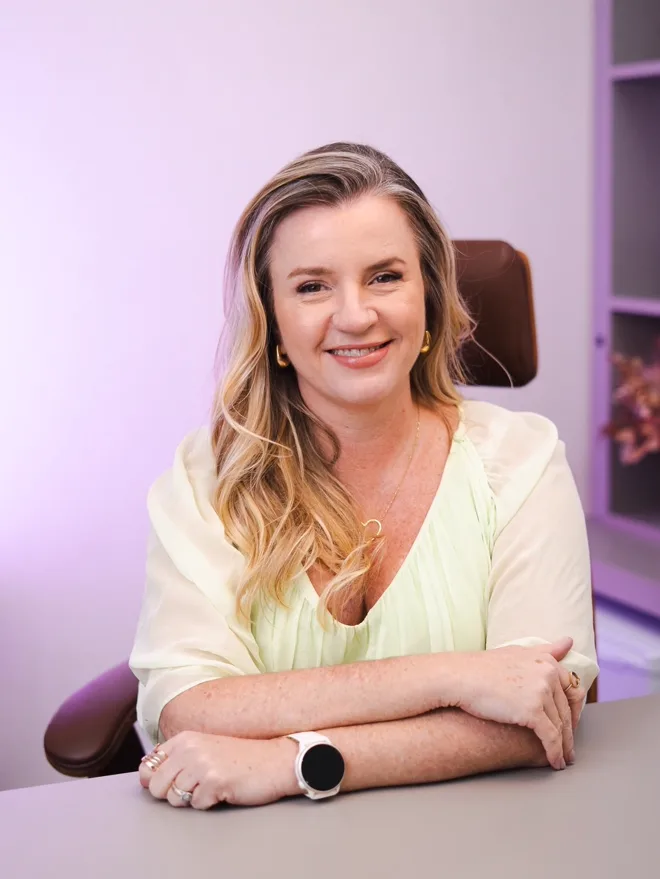

Médicos
Pediatras, otorrinolaringologistas, foniatras, neuropediatras e psiquiatras.

Em encontros ao vivo, vamos discutir casos clínicos e mostrar como usar as evidências científicas para orientar suas decisões na clínica ou na escola.
Quero fazer parte do ClubeO CLUBE

Um grupo de estudos e formação científica continuada sobre desenvolvimento infantil, linguagem e aprendizagem.
Curadoria científica: selecionamos e analisamos os estudos, artigos e consensos mais recentes em ciência e neurociência e trazemos tudo em uma linguagem simples, aplicável ao dia a dia da sua prática.
Atualização científica sem complicações.
Quero fazer partePARA QUEM É
Profissionais que atuam com desenvolvimento infantil, linguagem, aprendizagem e neurodesenvolvimento.
Pediatras, otorrinolaringologistas, foniatras, neuropediatras e psiquiatras.
Para levar as evidências mais recentes para a avaliação e o acompanhamento.
Terapeutas ocupacionais, psicopedagogos, professores da Educação Infantil e do Ensino Fundamental e demais profissionais da área.

O QUE ESTÁ INCLUÍDO

Ao vivoAo vivo, com 2 horas cada.

Casos clínicosDiscussão de casos clínicos, também com 2 horas cada, inclusive casos enviados pelos participantes.
Assista de novo quando quiser na plataforma.
E TEM MAIS
Artigos científicos selecionados, resumos e materiais de apoio.
Grupo exclusivo de WhatsApp para trocar experiências com os participantes.
2 aulas bônus: posicionamento digital com especialista e altas habilidades/superdotação.
Ver investimento
PROGRAMAÇÃO · CICLO 1
Marcos do desenvolvimento infantil
É TEA ou TDL?
Transtornos de aprendizagem
Trissomia do 21
Prematuridade e desenvolvimento infantil
Avaliação auditiva
3 encontros de discussão de casos clínicos ao longo do ciclo, inclusive casos sugeridos pelos participantes.
QUEM VAI TE ACOMPANHAR

Médica Otorrino e Foniatra
Médica Otorrino e FoniatraSeis meses de formação científica, atualização e troca de experiências com quem é referência na área.
INVESTIMENTO
Duração: seis meses (Ciclo 1, de novembro/2026 a abril/2027).
6 parcelas de
ou à vista R$ 1.198,20
FAQ
O Ciclo 1 vai de novembro de 2026 a abril de 2027. O primeiro encontro é em 25/11/2026.
Sim. São 6 encontros de atualização científica e 3 de discussão de casos clínicos, ao vivo, com 2 horas cada.
As gravações ficam disponíveis na plataforma por até 12 meses.
R$ 1.198,20 à vista ou 6 parcelas de R$ 223,00.